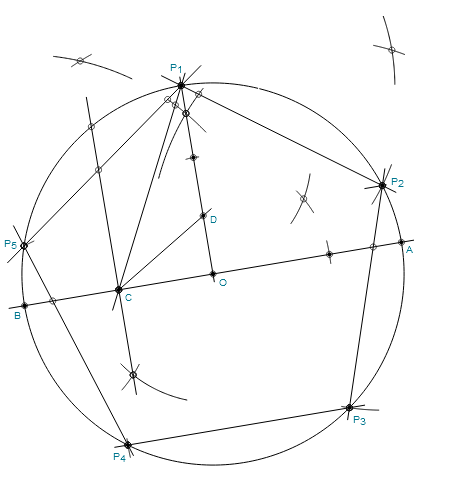
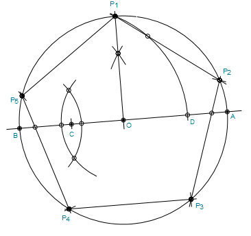

Construction of a Regular Pentagon with Compass and Straightedge
Below are two methods for constructing a regular pentagon with compass
and straightedge. Method 1 is the more traditional method while
method 2 uses a Carlyle circle
technique for a more efficient construction.
Method 1:

Steps:
- Draw circle with radius R centered at point O
- Draw a diameter, intersecting the circle at points A and B
- Create a perpendicular line to AB at point O, intersecting the circle at point P1.
- Find the midpoint of line BO, call this point C.
- Draw the line CP1. (optional - can help with next step)
- Bisect angle P1CO, intersecting line OP1 at point D.
- Draw a line perpendicular to OP1 at point D, intersecting the circle at point P2.
- Center compass at point P2 with length P1P2 and mark point P3 on the circle.
- Continue, marking points P4 and P5.
- Points P1-P5 form the pentagon.
Method 2:

Steps:
- Draw circle with radius R centered at point O
- Draw a diameter, intersecting the circle at points A and B
- Create a perpendicular line to AB at point O, intersecting the circle at point P1.
- Find the midpoint of line BO, call this point C.
- Center compass at point C with length CP1, draw arc to intersect line AB at point D (this is the Carlyle circle).
- Center compass at point P1 with length P1D and mark point P2 on the circle.
- Continue, marking points P3, P4, and P5.
- Points P1-P5 form the pentagon.